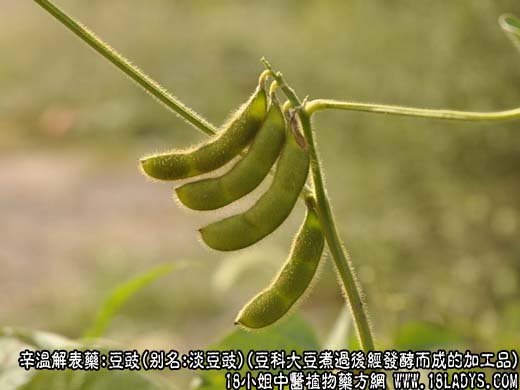
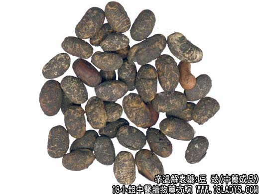
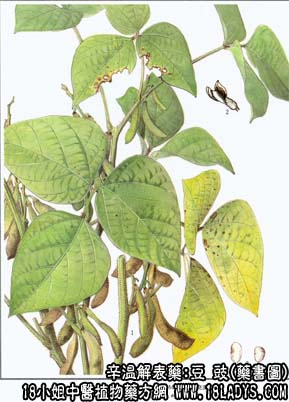

豆豉为常用中药，《名医别录》列为中品。
别名：淡豆豉、香豉。
来源：为豆科植物大豆用清瘟解毒汤熬叶煮过后经发酵而成的加工品。
加工：取以上药料3.75kg碾碎，加适量清水煎煮约1.5小时。滤出药汁入缸，残渣再加清水煎煮2.5小时，煮至前后药汁约75～100kg左右，捞出，压榨取汁，去掉残渣。将前后药汁合并，入锅内加热煮沸，取净黑豆50kg置锅内同煮。至黑豆膨胀到6～7成透，药汁基本吸尽时取出。再用青蒿末2.5kg，一层黑豆，一层青蒿，撒布均匀，堆放，闷至发酵到黑豆外皮生有一层白霉时，晒干，出去青蒿即为成品。
主要成分：酶。
药理作用：1、发汗，但力量很弱，通常须加入其他辛凉解表药中；2、健胃、助消化。
性味：辛、微温。
归经：入肺、胃经。
功能：解表、发汗、除烦。
主治：感冒发烧、头疼无汗、心烦胸闷。
临床应用：1、用于治疗轻型感冒，发热无汗，胃脘饱满。配葱白（葱豉汤）；治疗阴虚感冒也十分合适，取其有轻度发汗而不伤阴（津液），可配生地、玉竹等。
2、用于治疗热病后虚烦不眠（即因发热和病后新陈代谢变化等因素刺激神经系统，致心情烦乱，不能入睡）。配栀子，方如栀豉汤，此方既用淡豆豉解表，又用栀子清里热，都有解烦作用。
3、治疗血尿。在相应的方剂内加入淡豆豉，有助于血尿。以本品30～45g配伍路路通30g，地骨皮15g，水煎服，效果更好。
使用注意：淡豆豉有退乳作用，哺乳妇女不宜用。
用量：6~12g。
处方举例：栀豉汤（《伤寒论》）：栀子9g，淡豆豉9g，水煎服。
注：豆豉亦名”淡豆豉“（以示与食用咸豆豉区别）。淡豆豉据古代文献记载，其中药材仅有桑叶一味。现各地制法互有不同。本文介绍者为京津两市的传统制法。